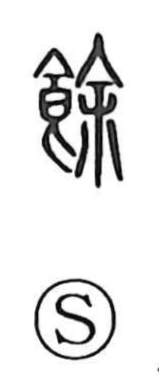

余

Kun: amaru, amasu, amari | On: yo
to remain ・ surplus ・ excess ・ remainder ・ i (archaic)
Explanation
For the meaning ‘remain’ or ‘be left over,’ 余 is the modern form of 餘. 餘 combines 食, food, with 余 as its sound element. It first describes plentiful food: provisions abundant enough for some to remain after people have eaten.
From food in excess, the meaning broadens to a remainder of any kind, a surplus, or something beyond the amount required. Spare time is likewise time left after other demands have been met. Other uses describe an effect, feeling, or possibility that still remains.
The simpler graph 余 also has an independent history and was borrowed for the first-person pronoun ‘I.’ Its modern use for 餘 brings these originally distinct written uses into the same form.